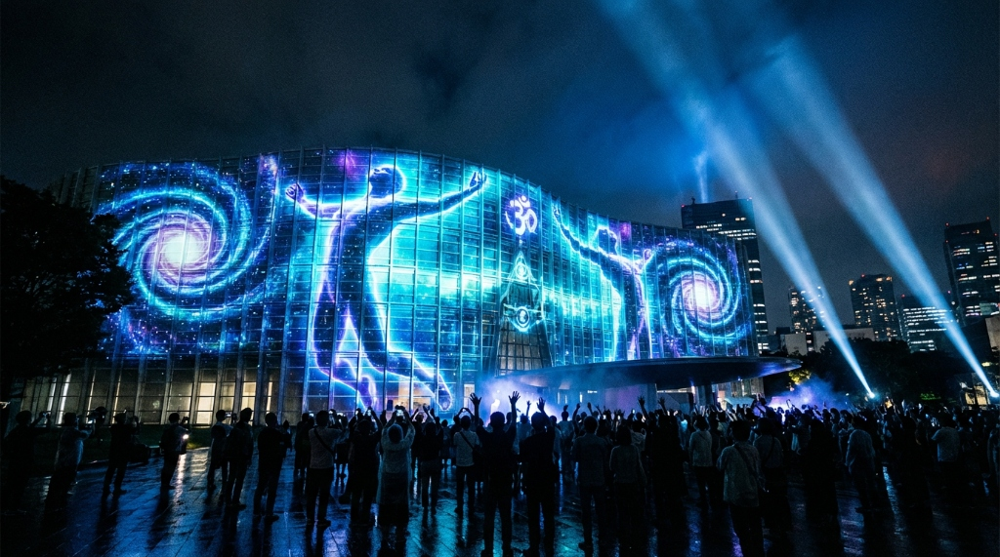

私たちがデザインするのは「空間」ではなく「脳内の記憶」です。
神経科学・心理工学・コーチングの3つのアプローチを統合することで、
一過性の感動ではなく、永続する行動変容を創り出します。
WATER FALLの体験デザインは、3つの学術的アプローチの融合により成り立っています。
それぞれが独立した効果を持ちながら、統合されることで相乗効果を生みます。
Approach 01
3つのハピネスホルモン（ドーパミン・オキシトシン・セロトニン）を意図的に設計し、最高パフォーマンスを再現する
詳しく見る arrow_downwardApproach 02
ミラーニューロンとストーリーアーク（ヒーローズジャーニー）で、参加者を「自分の物語の主人公」に変える
詳しく見る arrow_downwardApproach 03
25年の実践で体系化された独自メソッドで、ビリーフを書き換え「人生のOS」を更新する
詳しく見る arrow_downwardNeuroscience
私たちは、自己信念（ビリーフ）と行動の研究をベースに、認知機能・感情機能・行動機能の3つを最大化する体験設計を追求してきました。その核心にあるのが、3つのハピネスホルモンを意図的に設計に組み込む仕掛けです。
達成感・期待感・サプライズを戦略的に配置することで、ドーパミンの分泌を促進。「もっとやりたい」「また体験したい」という内発的動機と行動力を生み出します。
グループ体験・対話・共同作業を通じてオキシトシンの分泌を促進。チーム内の心理的安全性と絆を強化し、組織の連帯感を深めます。
承認・振り返り・成功体験の共有を体験に組み込み、セロトニンの分泌を促進。参加者の自己肯定感を高め、安定した行動変容の土台を築きます。
3つのホルモン統合設計
3 Hormones
ドーパミン × オキシトシン × セロトニン
3つの機能を最大化
Cognition
Emotion
Action
認知・感情・行動機能の統合アプローチ
行動変容の持続期間
6ヶ月+
ホルモン設計を活用した行動変容の維持
Belief（自己信念）→ Cognition（認知）→ Emotion（感情）→ Action（行動）のサイクルを、ホルモン分泌の最適化により加速させます。
エモーショナルアーク — ストーリー体験設計モデル
ヒーローズジャーニーの構造で体験を設計。ミラーニューロンが活性化するPeakと決意が生まれるEndを意図的にデザインします。
ストーリー設計の4要素
ミラーニューロン活性
ヒーローズジャーニー
感情曲線デザイン
主人公としての没入
Psychological Engineering
私たちは体験を「情報」として届けません。受講者の感情曲線に同調した「物語（ストーリー）」として設計します。体験の中にストーリーの弧（アーク）を描くことで、参加者は「傍観者」ではなく「自分自身の物語の主人公」として体験を受け取ります。
ストーリーアークを体験に組み込むことで、脳内のミラーニューロンが最大限に活性化。参加者は他者の物語を「自分ごと」として体感し、感情移入と共感を通じて深い気づきが生まれます。
感動・気づき・決意——その感情の流れをヒーローズジャーニーの構造で意図的に設計。参加者が「変わりたい」「動き出したい」という衝動を自然に、自発的に感じる仕掛けを体験のすべての場面に組み込みます。
ピークエンドの法則を応用し、体験全体の感情曲線を意図的にデザイン。クライマックスとフィナーレの感動を最大化し、記憶に深く刻まれる体験を実現します。
Coaching Methodology
脳科学・心理工学・心理学・マーケティング理論に精通したプロフェッショナルが、25年の実践と研究を経て体系化した独自のコーチングメソッド。「気づかせる」のではなく「気づきたくなる」場を設計し、ビリーフの書き換えから行動定着まで——知識としての学びではなく、人生のOSを更新する体験を提供します。
対話・内省・承認を組み合わせた独自の問いかけによって、参加者一人ひとりの自己信念（ビリーフ）を根本から見直し、「やらされる変化」ではなく「自分から望む変化」へと接続します。
参加者の内発的動機が自然に浮き上がる場を設計。ティーチング（教える）ではなくコーチング（気づかせる）を中心に、「やりたい」が自発的に生まれるプロセスを提供します。
ビリーフの書き換えから行動定着まで一気通貫でサポート。単なる知識の習得ではなく、思考の前提そのものを更新し、持続的な行動変容を実現します。
「自分は何を信じているか」を言語化する。無意識の前提・思い込みを対話で浮き彫りにする。
感動体験とコーチングの掛け合わせで、「今までの自分」と「なりたい自分」のギャップに気づく。
内省と対話を通じて、制限的なビリーフを可能性を広げるビリーフに更新する。
新しいビリーフに基づく行動計画を策定。フォローアップで定着を確認し、人生のOS更新を完了する。
個別のアプローチでは一時的な効果にとどまりますが、3つが統合されることで「感動→気づき→行動→定着」の完全なサイクルが回り始めます。
Step 1
感動体験で
感情記憶を形成
Step 2
心理設計で
「変わりたい」を生む
Step 3
コーチングで内的気づきを生み出し、
行動計画に落とし込む
Result
永続する
行動変容の実現
87%
研修後の行動変容率
+42%
エンゲージメント向上
98%
クライアント満足度
※ 参加者アンケート・クライアントフィードバックに基づく自社調査データ
イベント・研修・コーチング。どのような課題にも、
このメソッドを応用してソリューションを設計します。
初回ヒアリングは無料です。